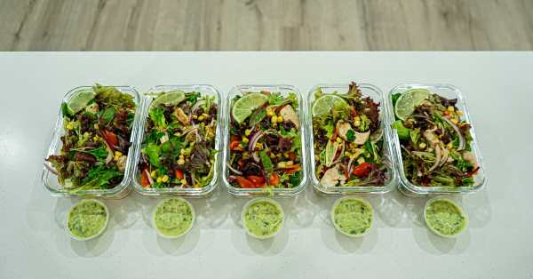
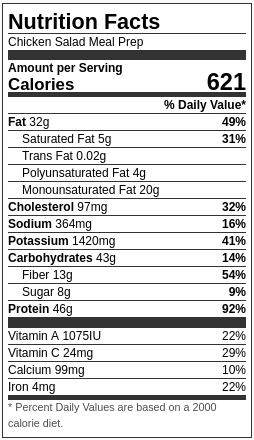

Chicken Salad Meal Prep

Quick, easy, and extremely delicious Mexican chicken salad
Ingredients
Avocado Yogurt Dressing
- 1 - Avocado
- ½ Cup (120g) - Natural Greek Yogurt
- 1 ½ Tbsp (30ml) - Red Wine Vinegar
- 1 - Lime, Juiced
- ½ Bunch (10g) - Coriander (Cilantro)
- 2 ½ tsp (1g) - Dried Oregano
- ⅓ Cup (80ml) - Extra Virgin Olive Oil
- Seasoning To Taste
Chicken & Seasoning
- 750g (1.65lbs) - Chicken Breast
- 1 tsp (2.5g) - Onion Powder
- 1 tsp (2.5g) - Garlic Powder
- 1 tsp (2.5g) - Ground Cumin
- 1 tsp (2.5g) - Smoked Paprika
- 1 Tbsp (20ml) - Olive Oil
- ⅓ Cup (80ml) - Extra Virgin Olive Oil
- Seasoning To Taste
Salad Fillings
- 200g (7.05oz) - Mesclun Lettuce Mix or Lettuce of Choice
- 200g (7.05oz) - Cherry Tomatoes, Quartered
- ½ Bunch (10g) - Coriander (Cilantro)
- 1 Can (400g-14oz) - Corn Kernels, Rinsed
- 1 Can (400g-14oz) - Black Beans, Rinsed
- 1 - Red Onion, Thinly Sliced
- ⅓ Cup (80ml) - Extra Virgin Olive Oil
- Seasoning To Taste
Steps
- Preheat oven to 200c° - 390°f.
- In a mixing bowl, add the chicken and seasonings, mix well and let marinate for 30 minutes up to 24 hours.
- Place a pan over medium-high heat, add in the olive oil, and once hot, sear the chicken for 3 minutes on each side. Transfer the pan to the preheated oven and bake for 13 minutes. Remove and rest for 10 minutes. Slice into thin strips.
- To make the avocado yogurt dressing, place all of the ingredients into a blender except the oil and blend over high speed until smooth. Whilst the blender is still running, slowly pour in the extra virgin olive oil until smooth and thick. Remove from the blender and portion into airtight containers or a squeezy bottle.
- Place all the remaining salad ingredients into a large mixing bowl, add the sliced chicken and mix well. Check seasoning.
- Portion the salad into meal rep containers or bowls, depending on how you'd like to serve it. Serve alongside the avocado yogurt dressing.
Nutrition Guide
